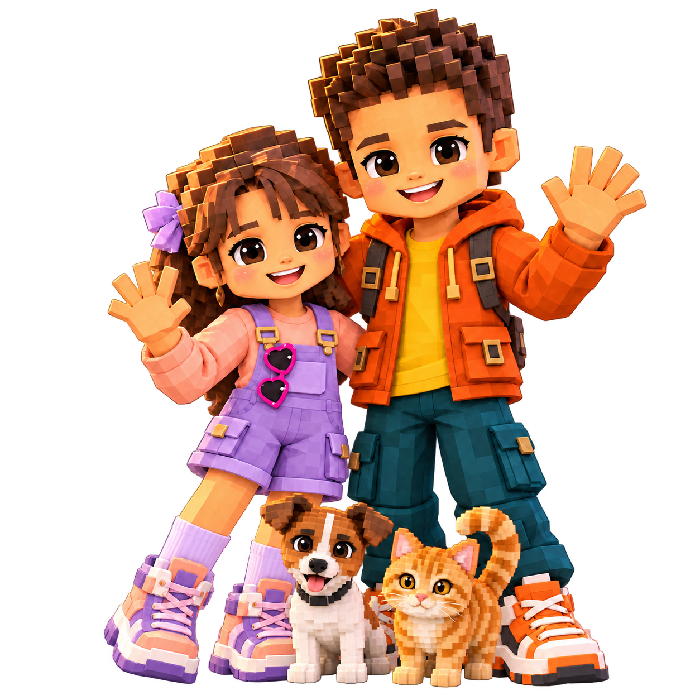
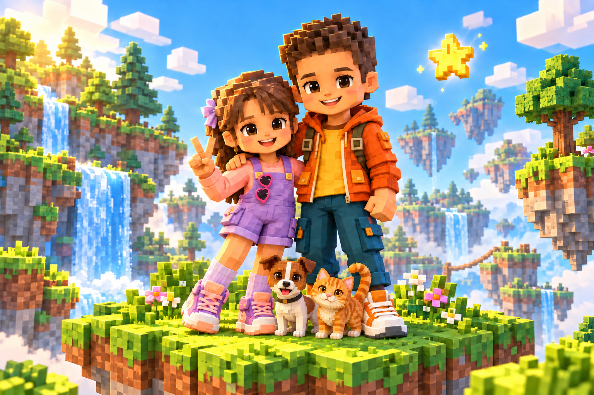

Um pequeno
universo.
Grandes aventuras.
Uma identidade para o Samuel.tech: o carinho de um projeto em família, a nostalgia dos computadores dos anos 90 e a imaginação de um mundo feito de blocos.
31 outubro 2026 · Identidade + interface + personagens
Aperte o play na imaginação.
Um portal familiar para reunir os jogos criados pelo pai para o filho. O protagonista é o brincar: descobrir mundos, inventar histórias e compartilhar momentos.
Personalidade
Curioso, acolhedor, inventivo e divertido. A interface fala com a criança com frases curtas e ações claras.
Conceito visual
Retrocomputação de 1990 + exploração voxel. Janelas, pixels e sombras sólidas convivem com personagens tridimensionais cheios de expressão.
Um S feito de blocos.
Assinatura principal horizontal. O quadrado verde com S é também o favicon.
Versão tipográfica em fundo escuro. Aplicar o símbolo verde ao lado quando houver espaço.
Área de proteção: manter pelo menos ¼ da largura do símbolo em todos os lados. Símbolo a partir de 24 px; assinatura horizontal a partir de 160 px. Não distorcer, arredondar o quadrado ou aplicar gradientes.
Natureza, pixels e aventura.
#193337Texto, contornos, sombras.
#F5F2E8Fundo principal e respiro.
#B9ED80Ações e destaques.
#C3E8F4Cenários e descoberta.
#FF9D52Samuel e pequenos selos.
#CEB7EFPlayer 2 e criatividade.
#326344Texto verde sobre papel.
#526568Texto de apoio.
Use tinta floresta sobre as cores claras. O verde play não deve ser texto pequeno em fundo branco. Distribuição sugerida: 60% papel, 20% cenário, 15% verdes e 5% acentos.
Nostalgia no título. Clareza na leitura.
explorar?
Courier New / monospace
Títulos e marca. Peso 700–900. Títulos de 40–66 px no desktop e 40–62 px no celular; seções de 30–46 px. Espaçamento entre letras de −1 a −2 px.
Um mundo espera por você.
Arial / Helvetica / sans-serif
Texto e botões. Corpo de 16–18 px, entrelinha 1,6–1,75. Os rótulos de sistema usam monospace em 11–12 px. Não usar uma fonte pixelada difícil de ler nos parágrafos.
A versão entregue usa fontes do sistema e funciona sem dependências externas. A fonte pode variar levemente conforme o sistema operacional.
Blocos que convidam a brincar.
Botões com contorno de 2 px e sombra sólida de 4 px. Sem cantos arredondados. Estados de foco visíveis e áreas de toque confortáveis.

| Elemento | Regra |
|---|---|
| Layout | Área máxima de 1200 px. Margens de 32 px no desktop e 18 px no celular. Ritmo de espaçamento: 8, 16, 24, 32, 48 e 64 px. |
| Janelas | Barra superior de sistema com nome lúdico; controles meramente decorativos, ocultos para leitores de tela. |
| Imagens | Renderização voxel colorida; rostos legíveis; personagens e animais inteiros sempre que possível. |
| Movimento | Pequenas reações ao toque. Respeitar preferência por movimento reduzido. Não tocar sons automaticamente. |
| Tom de voz | “Vamos nessa, explorador?”, “Escolha um mundo”, “Jogar de novo”. Acolher erros: “Vamos tentar de novo?”. |
A turma do nosso universo.
| Personagem | Assinatura visual | Direção |
|---|---|---|
| Samuel | Cabelo castanho espetado; jaqueta laranja; camiseta amarela; calça azul-petróleo. | Explorador curioso, expressão alegre. Protagonista com espaço para a irmã e os pets. |
| Player 2 | Cabelo castanho com franja e laço lilás; jardineira lilás; blusa pêssego; óculos de coração como acessório. | Parceira de aventuras; criatividade, amizade e imaginação. |
| Jack Russell | Corpo branco; cabeça e orelhas castanhas; faixa branca vertical no focinho. | Companheiro atento e animado. Usar a referência do cachorro fornecida pelo pai. |
| Gato amarelo | Pelagem laranja-dourada, listras mais escuras, olhos âmbar, cauda erguida. | Companheiro curioso e simpático. Mesmo acabamento voxel dos demais. |
As roupas são fictícias e não representam uma escola. Não publicar a foto original, uniformes, nome da escola, sobrenomes, localização ou rotina. As referências fotográficas não fazem parte dos arquivos do site.
Um caminho simples até a diversão.
| Etapa | Experiência |
|---|---|
| Home | Apresenta o universo, mostra uma prévia e convida a entrar. |
| Entrar | Protótipo: escolha visual de perfil. Futuro: acesso privado administrado pelo responsável. |
| Biblioteca | Cards grandes com nome, categoria, busca e favoritos. |
| Jogo | Uma aventura por vez, com retorno claro à biblioteca e instruções curtas. |